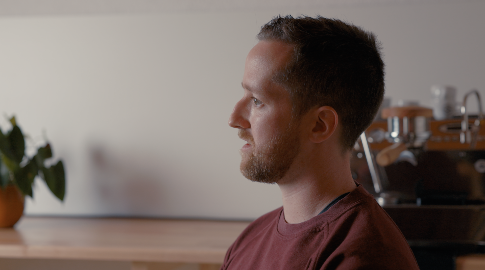
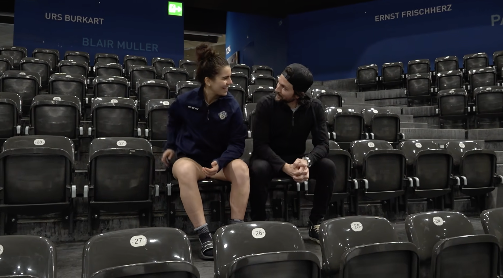
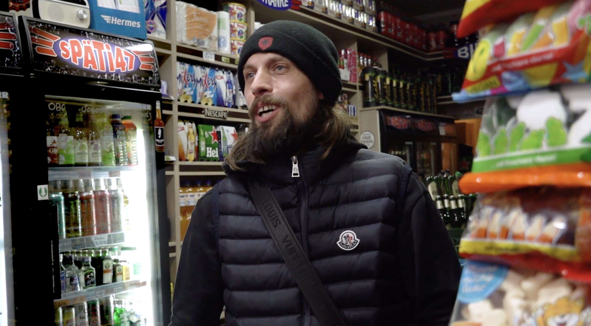

Platzhalter: Kurztext zum Film Beim Kaffee.
Platzhalter: Kurztext zur Auswahl aus Film, Fotografie und visuellen Experimenten.

Platzhalter: Kurztext zum Film Beim Kaffee.

Platzhalter: Kurztext zum Bvlgari Event in Meggen.

Platzhalter: Kurztext zum Film Superkraft statt Tabuthema.

Platzhalter: Kurztext zur Eventfotografie von Hublot und Zenith.

Platzhalter: Kurztext zur Special Edition.

Platzhalter: Kurztext zum Film Berlin.